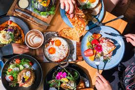

This project represents an online food ordering system where customers can browse restaurants, order food, and track deliveries. The platform connects customers with nearby restaurants and provides a convenient way to enjoy meals at home.
The system allows users to create an account and log in securely. Customers can manage their profile information, delivery address, and contact details.
The website displays a list of available restaurants with their ratings, menus, and delivery time estimates. Users can select restaurants based on cuisine and preferences.
Customers can explore the menu of a selected restaurant and view food descriptions and prices. They can add items to the cart before placing an order.
The system allows customers to review their cart items and confirm their order. After confirmation, the order is sent to the restaurant for preparation.
The platform supports secure online payments through debit cards, credit cards, and digital payment methods. Cash on delivery option can also be provided.
Customers can track the real-time status of their order, including preparation, dispatch, and delivery updates.
Food Delivery is a service that allows customers to order meals
from restaurants and receive them at their homes or offices.
With the growth of technology, many restaurants now provide online
ordering platforms and mobile applications. The food delivery industry
has expanded rapidly due to convenience and changing lifestyles.
Restaurants and delivery partners work together to provide
fast and reliable delivery services for customers.
Online food delivery systems allow users to browse menus,
compare prices, and place orders easily.
Customers can also read reviews and ratings before
selecting a restaurant.
Traditional methods of ordering food by phone are now
less common in the modern digital era.
Users can access these services through the
official food delivery platform homepage.
Many companies have introduced real-time order tracking
and digital payment systems.
Food safety guidelines may also include chemical
references such as H2O for hygiene standards
and mathematical models like x2 used in
delivery route optimization.
The history of food delivery shows the evolution
of restaurant services and customer convenience.
In earlier times, food was mainly served inside restaurants
or small eateries. The concept of home delivery
started when restaurants began providing takeaway and
delivery services for nearby customers.
With the advancement of technology, restaurants adopted
online ordering systems and delivery applications.
The development of smartphones significantly
increased the popularity of food delivery platforms.
This allowed customers to order meals anytime
and from any location.
Traditional paper menus are now
rarely used for online food ordering.
Customers can view menu details through the
restaurant menu page on delivery apps.
Companies have introduced AI-based
recommendation systems to suggest meals
based on customer preferences.
Food science research may include chemical
components like CO2 used in beverages
and mathematical formulas like y2
used in delivery demand forecasting.
Food delivery platforms provide
several features that improve customer experience.
Users can search restaurants, view menus,
and place orders through an online system.
The digital ordering interface
makes it easy for customers to choose meals.
Many applications provide
live order tracking and instant notifications.
Customers can track their food from
preparation to delivery.
Payment methods include credit cards,
digital wallets, and cash on delivery.
Old ordering systems that required
manual processing are now
mostly replaced by automated platforms.
Users can manage orders through the
delivery application dashboard.
Food companies have introduced
contactless delivery and smart logistics systems
to improve safety and efficiency.
Food technology studies may also examine
chemical ingredients like NaCl and H2O
and mathematical algorithms such as r2
used in delivery optimization.
Food delivery services provide
many advantages for both customers and restaurants.
Customers can order meals without leaving their homes,
saving time and effort. The online ordering system
offers convenience and accessibility.
Restaurants benefit from
increased customer reach and higher sales.
Delivery platforms connect restaurants
with thousands of potential customers.
This helps small restaurants grow
their businesses.
Traditional dine-in only models are now
less effective in the digital food industry.
Customers can explore options through the
food delivery search page.
Many companies have introduced
cloud kitchens and virtual restaurants
to expand food delivery operations.
Food science resources may discuss
chemical reactions in cooking such as CO2
production in baking and mathematical models
like n2 used in logistics analysis.
The future of food delivery will involve
advanced technologies such as artificial intelligence
and automated delivery systems.
The integration of smart logistics
will improve efficiency and reduce delivery time.
Companies are experimenting with
drone delivery and autonomous delivery vehicles.
These technologies will transform
the way food is delivered to customers.
Experts believe automation will
improve speed and accuracy.
Traditional delivery systems may eventually
become less efficient compared
to automated delivery solutions.
Customers will access services through the
next-generation delivery platforms.
Companies have already introduced
AI-powered order prediction systems.
Future research in food technology may also
consider chemical compositions such as O2
in food preservation and mathematical
prediction models like x3 used
for demand forecasting.
